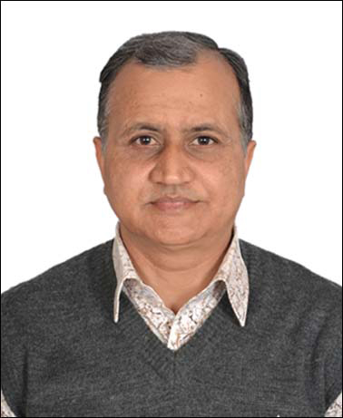

WOAC SXPC 2026
Feb 3-5, 2026
St. Xavier's College, Maitighar, Kathmandu
St. Xavier's College, Maitighar, Kathmandu
| Home | Registration | Program | Directions | Flyer |
The Workshop on Astrophysics and Cosmology, organized by SXPC–Nepal, is a three-day academic workshop to be held from February 03–05 at St. Xavier's College, Maitighar. The workshop introduces participants to core topics in cosmology, galaxy formation and evolution, and high-energy astrophysics, with an emphasis on hands-on data analysis.
Participants will receive guided training on HEASoft and XSPEC, including software installation, data preparation, and physical interpretation of astrophysical observations. Assignments will be given after the workshop, and certificates will be awarded based on participation and assignment completion.
A detailed guide for installing HEASoft is available here: [Insert Guide Link].

Prof. Mingang Chendi
Institute of Engineering, Tohoku University
|

Prof. Liqiao Khanei
Institute of Engineering, Tohoku University
|
Dr. Bing Nofil Ghandali
Institute of Engineering, Tohoku University
|
Dr. Shreeman Nagarhefi
Institute of Engineering, Tohoku University
|